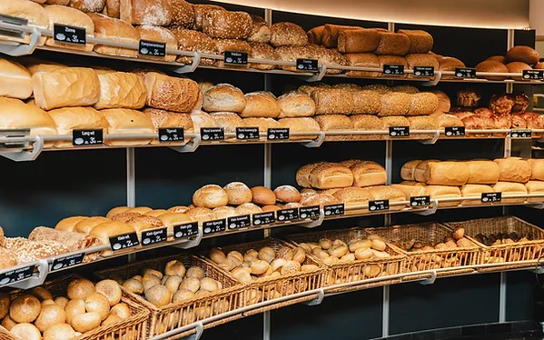

Vers en ambachtelijk zijn de kernwoorden van ons bakkersproces. Wij gebruiken alleen de beste ingrediënten en zorgen voor kwaliteit.
Voor feesten, evenementen en bijzondere gelegenheden kunt u bij ons terecht.
Proef onze heerlijke taarten en gebakjes, met zorg bereid volgens oude tradities.

Ontdek het proces achter onze heerlijke broden, van deeg tot oven. Wij gebruiken traditionele technieken voor een ongeëvenaarde smaakbeleving.
"Brood bakken is een kunst. Elk brood vertelt een verhaal van zorg en aandacht voor de ingrediënten." - Bakker Jan
| Product | Prijs | Beschrijving |
|---|---|---|
| Volkoren Brood | €2,50 | Heerlijk volkorenbrood met een knapperige korst. |
| Appeltaart | €12,00 | Traditionele appeltaart met verse appels en kaneel. |
| Chocoladecake | €15,00 | Luchtige cake met pure chocolade. |